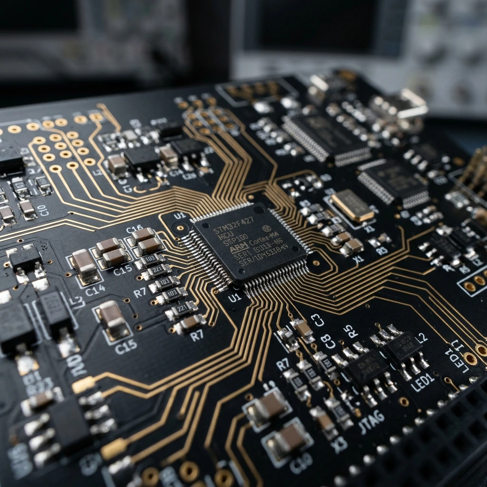
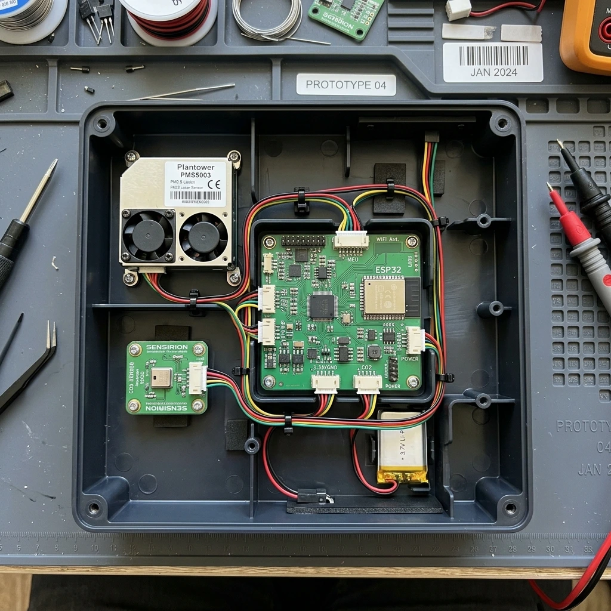
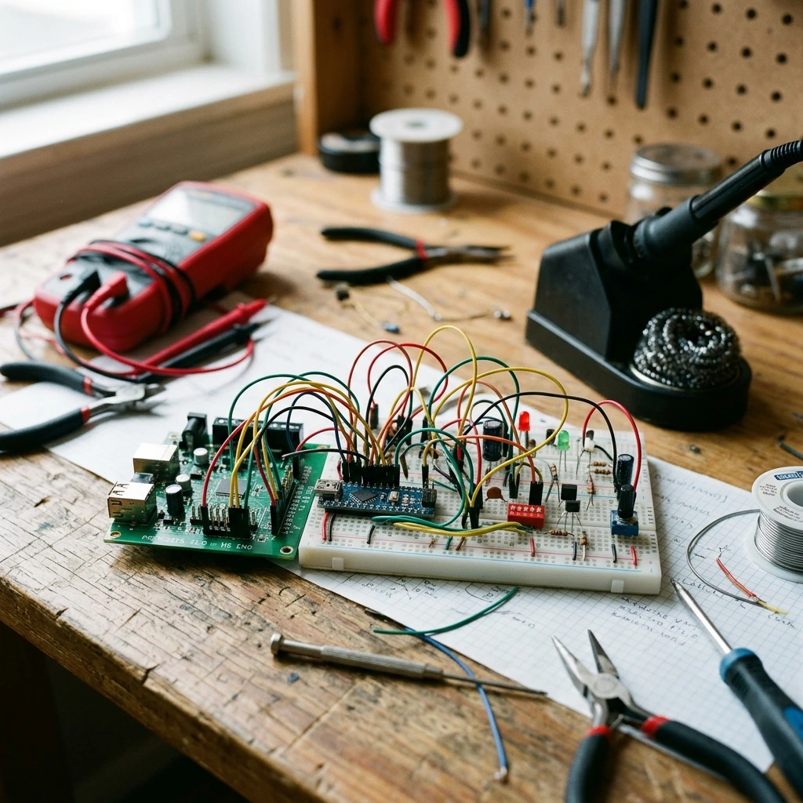
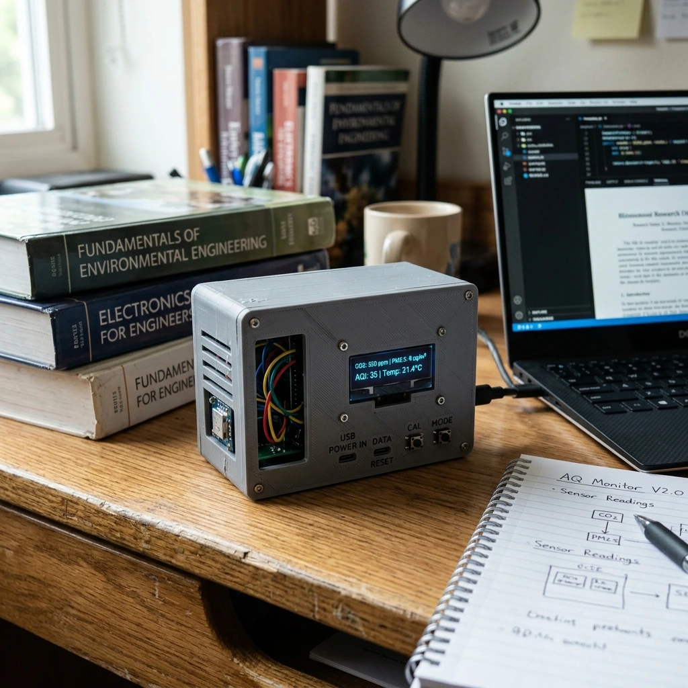
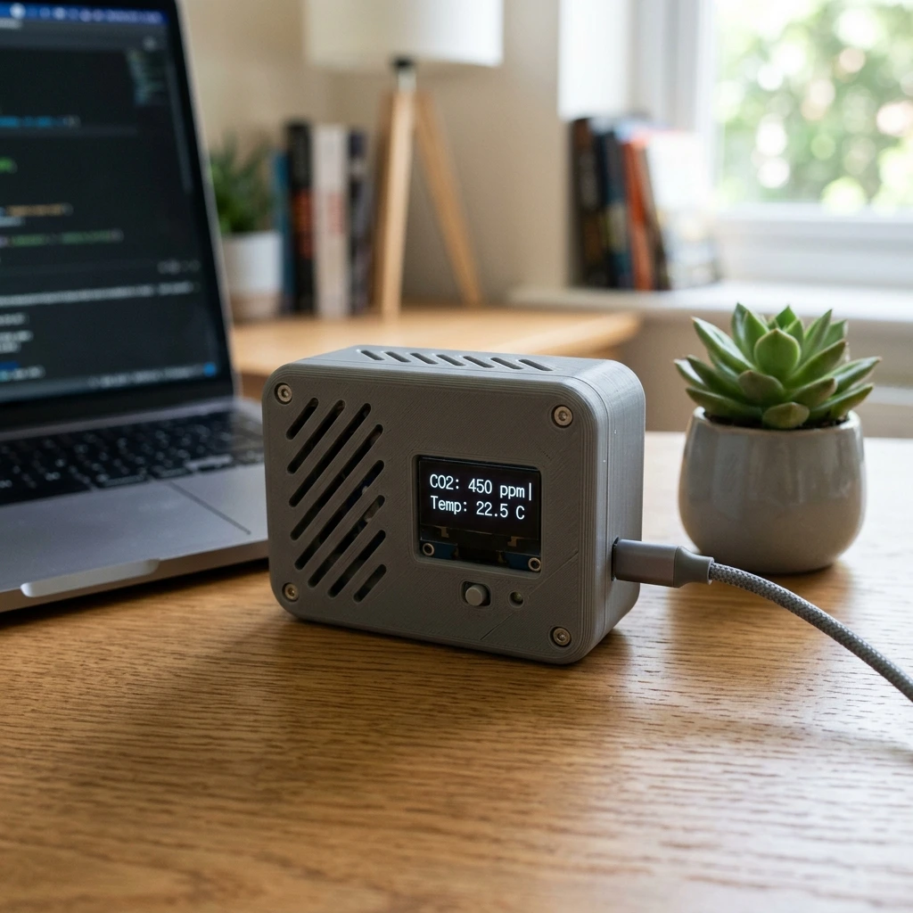

The genesis of the Air Analyzer was inspired by the COVID-19 global lockdowns, a period that abruptly severed our connection to the outdoors and highlighted the critical importance of indoor air quality. Too often, climate-damaging habits persist simply because poor air quality remains invisible. By engineering a device to transparently display essential air metrics, the invisible becomes tangible and actionable.
System Architecture & Hardware Design
To ensure optimal component placement and modularity, the hardware architecture was split across two custom-routed Printed Circuit Boards (PCBs) connected via a ribbon cable:
- The Main Board: Serves as the central processing unit, housing the microcontroller, voltage regulators (LM1117 5V and 3V3), and the primary sensor array.
- The HMI Board: Houses the 2.8-inch SPI TFT display, tactile switches, backlight control potentiometer, a 90dB piezo buzzer for threshold alarms, and status LEDs.
Hardware Engineering & Assembly





Industrial-Grade Sensor Array
- Sensirion SPS30: MCERTS-certified optical particulate matter sensor utilizing laser scattering for highly precise PM2.5 measurements.
- Sensirion SGP30: A multi-pixel CMOSens® gas sensor for monitoring TVOC (Total Volatile Organic Compounds) and eCO2.
- Freescale/NXP MPL3115A2: Piezoresistive absolute pressure sensor with integrated altitude calculation and an I2C interface.
- Grove Luminance Sensor: Measures ambient light intensity, paired with a specifically calculated Rail-to-Rail Operational Amplifier (AD8615) to scale the 2.3V output to the required 5V logic level.
Embedded Software & Protocol Integration
The system is driven by a Freescale NXP MC9S08AW32 microcontroller. Instead of relying on high-level abstractions like C, the final software was written entirely in Assembler to maximize control and efficiency.
- Modular Source Code: The software utilizes a highly modular structure to separate initialization routines, sensor polling, TFT rendering, and button logic.
- Multi-Protocol Communication: The microcontroller simultaneously orchestrates I2C, UART, and SPI communications.
- Troubleshooting & Bottlenecks: A major technical hurdle involved debugging the TFT initialization sequence. By analyzing the SPI clock signal via an oscilloscope, it was discovered that the baud rate exceeded the component's limits, clipping the signal from 5V to 3V. Adjusting the internal clock prescaler resolved the timing issue.
Commercial Viability & Project Management
This project was executed under rigorous project management frameworks, utilizing Gantt charts and defined Work Packages (WPs) to track progress.
- BOM (Bill of Materials): The net component cost for a single prototype amounts to approximately €258.27.
- Labor Tracking: The development cycle required exactly 192 documented working hours.
- Scaling Projections: Total R&D cost for Unit #1 was calculated at €3,854.77. However, scaling simulations demonstrated that a 1,000-unit production run would drastically reduce the unit cost.